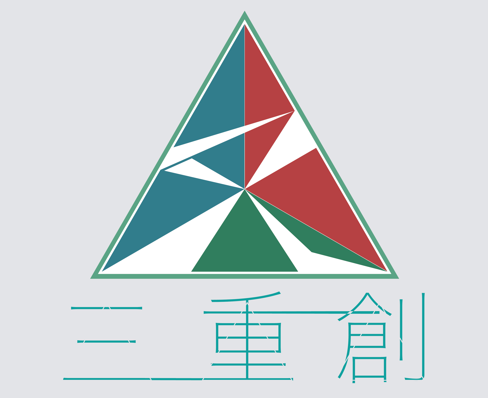

七夕祭について
七夕祭とは
毎年7月の第一土曜日に開催され、今年は7月6日に開催されます。
左下は昨年の様子です。
#わたしのSFC
— 第29回七夕祭実行委員会 (@tana29th) 2018年12月26日
今年の7/7に開催された七夕祭の様子です pic.twitter.com/c9anudkfow
コンセプトとロゴマーク

今年の七夕祭のコンセプトは、第三十回という節目にちなんで、｢三重創」に決定いたしました。
慶應大学唯一の夏祭りとして知られる七夕祭は、地域の方々の夏祭りとしても親しまれています。
従来の七夕祭は運営、企画を行う「学生」、憩いの場として和やかに慈しまれる「大学」、そしてご協力やご来場してくださる「地域」、という三者の繋がりを尊重し、築きあげられていました。
今年もそのような七夕祭の基本理念を踏襲しながらも、新たな元号、三十周年、という二つの節目を前に、新たな三者の繋がりを発見し、幾重にも重ね、新たな七夕祭を創造していこうという志と、「感謝」、「敬意」、「発展」という三者を、「三重創」という言葉に込めました。
さて、ロゴでは「過去」、「現在」、「未来」という三者を調和させるべく、新鮮さを感じさせるデザインを取り入れながらも、掌の温もりを彷彿させるレトロな色合いを基調としています。
中央の三角形は、正四面体の一点に方々の場所から光が集中し、そして拡散していく様子を表しています。
正面から見る七夕祭は、瞬間的に色彩豊かな光を観ることができますが、そのような美しい面も、異なる光の映り方をもつ、三つの側面無しに存在することはできません。
三者の側面があるからこそ、七夕祭を形作ることができることを表現しています。
光を何かに例えるのであれば、一番妥当なのは人でしょう。
光も種類は様々で、細いものもあれば、角の多いものもあります。一つの目標に向かって出発点も特性も違う光が集まり、その軌跡が七夕祭を結果的に形成しています。やがて光は集まった点から離散し、それぞれの道へ進んでいきます。集中した時とは異なる様相を成しているでしょう。
光は再び四方八方に散りますが、三角形の中においてつながり続け、光を隅々まで届けることができます。そのような光の「集中」、「離散」、「統合」の三者の要素を表現しています。